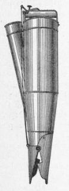
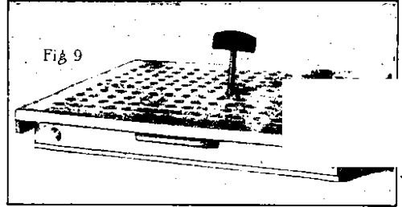
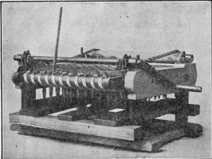
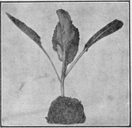

207. Transplanting By Hand
Description
This section is from the book "Vegetable Gardening", by Ralph L. Watts. Also available from Amazon: Vegetable Gardening.
207. Transplanting By Hand
Various devices are used for hand transplanting. The usual tools are the dibbers and the trowels, illustrated in Figures 33 and 34. The dibbers are especially valuable for light or sandy soils, while the trowel is best for stirrer soils. When transplanting the dibber is thrust into the soil to the required depth with the right hand, and after removal the left hand places the plant in the hole. The soil is either pressed to the roots with the hands, or the dibber is again thrust into the soil near the plant, and with a quick movement the soil is pressed against the roots. Trowels and spades may be used in a similar manner, and trowels and hoes may be used in opening holes immediately before planting. The removed ground should be pressed firmly over and around the roots. Figure 35 shows a useful setter, which has been patented; it works very well in fine soil, and applies water when desired. After some practice, plants may be set as rapidly by this device as by any hand method. Comparatively few men are able to set as many as 8,000 plants a day, and most laborers fall below 5,000, except in close planting under the most favorable conditions.
Fig. 35. useful plant setter.
In frame and greenhouse work small dibbers or transplanting sticks are in common use. The holes may be made and the plants fastened in the same manner as when dibbers are used in the field. It is a great advantage to have the rows straight and a uniform number of plants in each bed or plant box. To accomplish this purpose and to facilitate the work, spotting boards are often used. Sometimes these have small blocks nailed in check rows on the under side, and these merely mark places on the soil for the plants without making holes. Other boards are made with pins which may be forced into the soil, making the holes for each plant, but unless the soil is sandy and of the right degree of moisture they will not work successfully. Figure 36 shows a transplanting board. It may be made of two pieces, cleated with strips, and the holes bored in check rows, with a 24-inch bit. This board is placed over the flat of soil and the holes punched with the dibber shown in Figure 36. The point of the dibber is iron and the handle wood. The holes on the upper side of the board are beveled to receive the dibber more readily. See Chapter XVI for further notes on the use of this board.
Fig. 36. Transplanting board and dibber.
Fig. 37. DIBBLING MACHINE FOR USE WHEN TRANSPLANTING INTO FLATS.
Figure 37 shows a dibbling machine invented for making holes in flats or plant boxes. It is operated by means of two levers. One lever held by the left hand elevates the flat filled with soil, while the right hand manipulates a lever which turns a battery of spools, each provided with a metal point. With this machine a boy or a man can make 150 holes in a flat in a few moments.
Previous to transplanting to the field, it is a great advantage to allow the plants to become dry a day or so before and then water thoroughly just before the shift is made. Late tomato plants, grown in the open ground, are sometimes pulled, allowed to wilt and then sprinkled before they are planted in the field. All plants should be lifted with care, retaining as much soil as possible. Figure 38 shows a cabbage plant removed from the flat. With such a body of compost adhering to the roots there will be little check in growth. The flats are distributed over the field at convenient intervals. Boys may be employed to drop the plants. To remove them the flat is placed on edge, lifted and jarred on the ground hard enough to make the soil or manure separate from the bottom of the flat. After taking out a plant or two in the corner, each may be removed with a liberal quantity of soil clinging to the roots. Puddling the roots, i. e., dipping them in thick, muddy water before planting is an advantage when they are stripped. It is an advantage also to sprinkle the tops at this time, although in large commercial plantings this precaution is seldom taken. When setting in the field, the plants are usually protected from the sun to keep the roots moist and to prevent unnecessary wilting; they should be planted in fresh soil as soon as possible after pulling. Clipping the tops before planting is a benefit, especially if the tops are large or the plants spindly.
Fig. 38. CABBAGE PLANT READY FOR TRANSPLANTING.
Field planting can be done very rapidly by boys when the force is properly organized. If the foreman is patient, boys can soon be taught to use dibbers or trowels. In heavy soils the following plan is satisfactory: Have a good foreman who understands boys, a man, a horse and a single light shovel plow to make furrows, which should not be opened faster than they are needed. A dozen boys make a convenient force. Let six of them drop plants and six set them. Designate the boys as droppers and planters, and give each a number, running from one to six. Have it understood that each boy is to drop or plant the row that corresponds with his number. The foreman walks behind the boys and sees that the work is done properly and that the boys are kept together. With this plan of organization, a dozen boys and two men will plant 40,000 to 50,000 plants in a day. If the boys are paid 50 to 60 cents and the men $1.50, the cost an acre will be about $3.
Continue to:
Tags
plants, crops, gardening, cultivated, harvesting, food ,greenhouses, fertiliser, vegitables